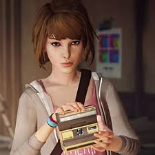
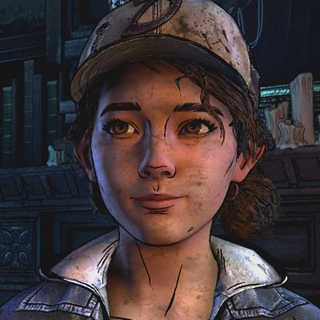
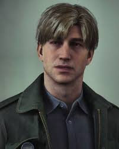
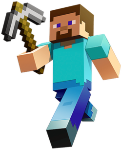

My Favorite Characters

Max Caulfield from Life is Strange is a character that shifted my perspective in how I view the world. She is a character that has superpowers to rewind time and save her best friend.

Clementine from The Walking Dead is a character that has the most impactful character development I have ever seen. She is a characer that was born in a zombie apocalypse while being raised by Lee, a man who taught her the instincts of survival.

James Sunderland from Silent Hill 2 is a character that courteously seeks for others and brave to unravel the truths no matter the circumstance. He is a character that looks for his wife through Silent Hill which is a town that perceives an alternate reality shaped by their own fears and trauma.

Steve from Minecraft is a character I grew up with that brought a lot of nostalgia to my life. He is the default character from Minecraft that fits in the game aesthetically well.